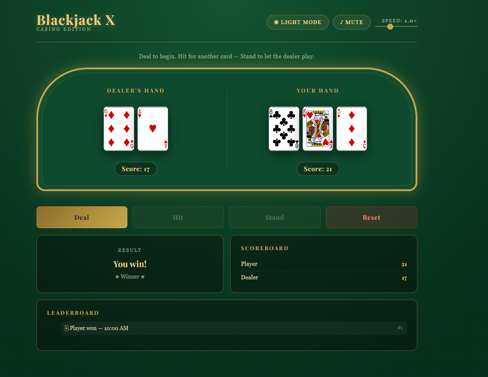
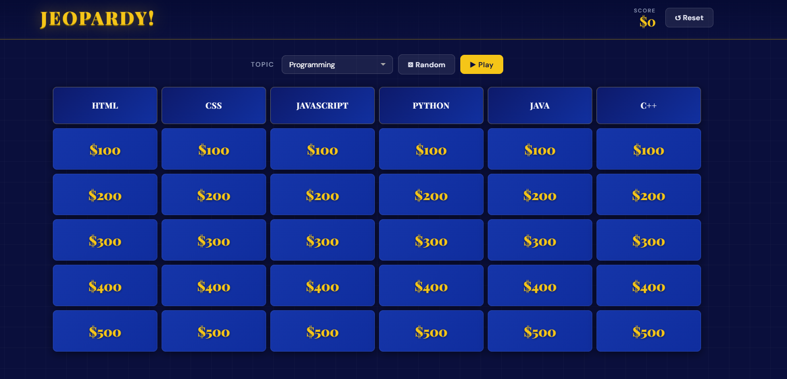

Test Automation & QA
Selenium/TestNG automation at Heritage Bank reduced manual testing cycles. Hands-on with test planning, edge case coverage, and quality process improvement.
Software Developer · QA & Test Automation · SQL & Data Pipelines
I bring experience across software support, development, QA automation, and data engineering. My strength is turning messy processes into reliable tools, automated workflows, and systems that actually hold up.
About
I'm Xavier Denson, a software development professional with a BS in Software Development from Green River College and a Google Advanced Data Analytics certification. My background spans QA automation, SQL data engineering, software support, and full-stack development — which means I understand both how systems are built and how they break.
In my current role at Aero Controls, I built an automated data pipeline using Python, SQL Server, and Power Automate that replaced a manual Excel-based reporting process. At Heritage Bank, I reduced testing cycles through Selenium and TestNG automation. I enjoy work where the output is measurable — less manual effort, fewer errors, faster delivery.
I'm especially effective in roles where debugging, data accuracy, cross-team collaboration, and practical software delivery all matter. I'm also available for freelance projects in automation, SQL reporting, and internal tooling.
Experience highlights
Selenium/TestNG automation at Heritage Bank reduced manual testing cycles. Hands-on with test planning, edge case coverage, and quality process improvement.
Built end-to-end reporting automation with Python, SQL Server, and Power Automate at Aero Controls. Comfortable with T-SQL, stored procedures, and data modeling.
Experience diagnosing technical issues, supporting business-critical software, and improving reliability across enterprise environments.
Able to bridge technical implementation with business needs — from documentation and Jira workflows to stakeholder reporting and support conversations.
Featured projects
These projects span automation pipelines, QA engineering, front-end development, and UX design — reflecting the range of problems I'm equipped to solve.
Replaced a manual, Excel-based reporting workflow with an end-to-end automated pipeline. Data is extracted via Python, processed through SQL Server, and delivered automatically using Power Automate Desktop.
Built and maintained a Selenium/TestNG automation suite to reduce manual regression testing cycles. Contributed to test planning, coverage analysis, and improving overall release confidence.

An interactive browser-based Blackjack project focused on gameplay logic, state handling, and polished user interaction.

A study application inspired by quiz-game interactions, built to make learning more engaging and structured.

A UX-focused concept centered on creating a smoother bakery ordering experience with intuitive flows and clear visual hierarchy.

A concept project designed to help connect potential pet owners with animals in need of homes through clearer browsing and discovery.
Skills
JavaScript, Python, Java, SQL / T-SQL, HTML, CSS
Selenium, TestNG, QA automation, regression testing, debugging, documentation
SQL Server, MySQL, Power Automate, Power BI, Jira, Azure DevOps, Postman
Microsoft Intune, Azure SQL, Asset Panda, Docker, Agile / Scrum
Contact
🏢 Open to full-time roles
I'm targeting SDET, Data Engineer, and SQL-focused roles in the Pacific Northwest. If you're hiring for a team where automation, data accuracy, and practical delivery matter — let's talk.
⚡ Available for freelance
I take on project-based work for small businesses and teams that need practical software help without a full-time hire.